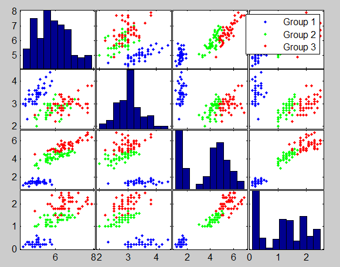
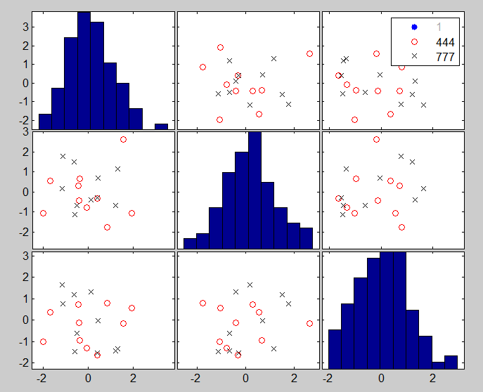
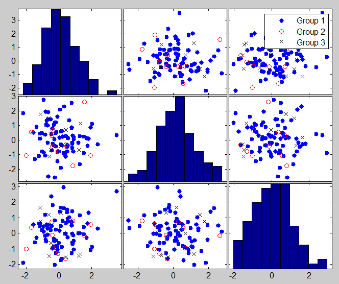
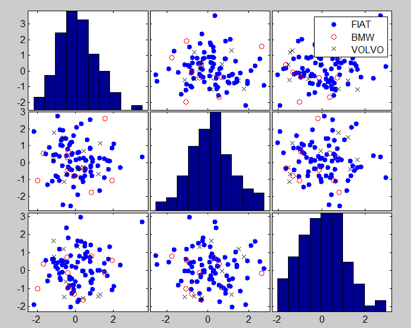

| Forward Search Data Analysis Toolbox™ |
|
| Provide feedback on FSDA toolbox |
Add objects to the scatter plot matrix (created with function gplotmatrix of Statistics toolbox)
add2spm(H,AX,BigAx)
add2spm(H,AX,BigAx,param1,val1,param2,val2,...)
As default add2spm makes legends in the existing scatter plot matrix clickable or creates a clickable multilegend if the legend does not exist.
Using varargin it is possible to
1. personalize the legend of groups in the scatterplot matrix. See option 'userleg'.
2. add labels of the units belonging to the last data group (or to the grouop with the largest value in the grouping variable) of each scatter (panel). See option 'labeladd'.
add2spm(H,AX,BigAx) adds clickable multilegends to the scatter plot matrix.
add2spm(H,AX,BigAx,'1') adds clickable multilegends to the scatter plot matrix and write the labels of the units of the last selected group or in general of the group corresponding to the greatest element of the grouping variable in the gplotmatrix.
The input elements of add2spm are the typical output of function gplotmatrix. More specifically, H is an array of handles to the lines on the graphs. The array's third dimension corresponds to groups in the grouping variable. AX is a matrix of handles to the axes of the individual plots. BigAx is a handle to big (invisible) axes framing the entire plot matrix.
Remark: add2spm is essentially used within FSDA function spmplot. However it can be also be used once a generic scatterplot matrix created with MATLAB function gplotmatrix is created.
add2spm(H,AX,BigAx,param1,val1,param2,val2,...) specifies one or more of the name/value pairs described in the following table.
| Parameter | Value |
|---|---|
| 'labeladd' |
Default is '', i.e. no labels are added to the symbols
inside each scatter.
|
| 'userleg' |
Default is '', i.e. the existing legends are left as they
are and are simply made clickable. However, if there is no
legend, a default one is created ('Group 1', 'Group
2', etc.).
|
Add clickable multilegend to Fisher Iris data
% load Fisher iris data load fisheriris; % Create scatter plot matrix [H,AX,BigAx]=gplotmatrix(meas,[],species); % add clickable multilegends add2spm(H,AX,BigAx) % Clicking on the entry of the legend it is possible to hide/show the units belonging to the corresponding group.

In this example option Userleg is explored
% set some multivariate data and some groups y = randn(100,3); group = ones(100,1); group(1:10,1) = 444; group(11:20,1) = 777; % Make a scatterplot using gplotmatrix defaults. % The legends automatically created are '1','444' and '777'. [H,AX,BigAx] = gplotmatrix(y,[],group,'brk','.ox'); % with add2spm with default options, the gplotmatrix legends % become clickable. add2spm(H,AX,BigAx);For example aftering click on the entry for group 1 on the legend we get

% by running add2spm with option 'userleg' set to '1', the clickable % legends will become 'group 1', 'group 2' and 'group 3'. [H,AX,BigAx] = gplotmatrix(y,[],group,'brk','.ox'); add2spm(H,AX,BigAx,'userleg','1');

% by running add2spm with 'userleg', {'my group 1' ; 'my group 4' ; 'my
% group 7'} the clickable legends change as desired.
[H,AX,BigAx] = gplotmatrix(y,[],group,'brk','.ox');
add2spm(H,AX,BigAx,'userleg',{'FIAT' ; 'BMW' ; 'VOLVO'});

| Provide feedback on FSDA toolbox |
|
|
FSDA product page | BC |
|